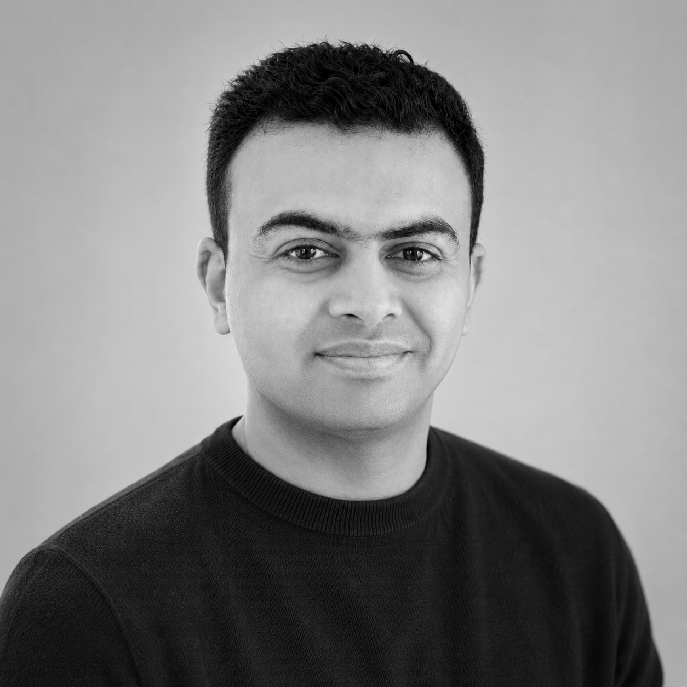

>
Building reliable, safety-aligned AI systems — from RLHF pipelines and inference optimization to red-teaming frameworks and real-time LLM monitors.

Abhilash Sarnad · ML Engineer
01 / About
I'm an ML Engineer at Educational Testing Service (ETS), working at the intersection of large language models, AI safety, and production ML systems.
My focus is LLM alignment and safety research — building adaptive red-teaming engines, real-time monitoring systems, and safety probes that surface model failure modes before they reach production.
I'm equally invested in the infrastructure side: squeezing latency out of LLM inference, building open RLHF training pipelines, and shipping end-to-end reasoning systems that can be reasoned about, not just benchmarked.
Outside work I enjoy competitive AI challenges, cosmological reasoning research, and building autonomous systems that occasionally surprise me.
02 / Skills
The tools I use to take ML from idea to production.
03 / Projects
Open-source work spanning LLM safety, inference, training, and reasoning.
Adaptive red-teaming engine for discovering LLM failure modes. Adversarial prompt generation with feedback loops to systematically probe vulnerabilities — layer 2 of an AI safety research stack.
Real-time LLM safety monitoring layer that intercepts and classifies model outputs as they stream. Low-latency safety scoring, policy violation detection, and alerting — layer 3 of the safety stack.
Deep-dive into GPT-2 inference acceleration — quantization (INT8/FP16), dynamic batching, KV-cache tuning, and speculative decoding. Benchmarks latency vs. accuracy trade-offs across strategies.
Open-source RLHF training pipeline for fine-tuning language models with human feedback. Implements reward modeling, PPO training loop, and preference data collection — modular and model-agnostic.
Structured reasoning system for cosmological question answering — combining symbolic knowledge graphs with neural retrieval to answer complex multi-hop questions about astrophysics.
Lightweight safety probing toolkit — layer 1 of the AI safety stack. Constructs targeted probing datasets and evaluation harnesses to identify alignment failures in language models.
04 / Experience
05 / Contact
Open to senior ML engineering roles, research collaborations, and interesting problems.
Best reached via email or GitHub.